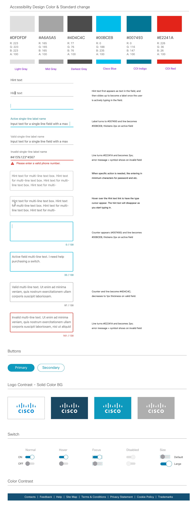

Cisco Security Login

Design Overview : Security Web features
When accessing certain data online, there is a huge risk that hackers or any unknown outside entity can steal your password and access your account. How can we prevent this problem from happening or better help reduce the risk? This projects aims at making the process to login to you account more secure while building the account ui that has their personal company information. This process will be used by a global audience and it is crucial that we look at all forms of security measures to protect our users from digital threats.
The goal of the project:
To create a secure login process where customers can safely access their account.
Who is the client?
• All Cisco employees, third-party venders, users who use the guest accounts.
What I’m trying to solve
• To make a safe experience for employees to login to their account.
• Enhance the current security access by enhancing the authentication process.
• Give users the option to customize their options on their profile page.
• To design a fluent ui that users can easily navigate and change their credentials.
• Accessing all Cisco services by securely logging into your credentials.
Defining the Problem
The main problem I will be addressing is lack of security and potential risks.
• What are the needs?
• Why do they need help?
• What happens when there is a security breach?
• How can we protect users from getting data stolen?
• Are users able to easily access their account?
Users need to access their information, but sometimes everyone will run into the common
problem of forgetting their passwords or wanting to change their passwords. Sometimes
if your information, is stolen, you can’t access you account at all. Which poses a big problem
of possible identity theft and stealing your personal information while being logged in as someone else.
Because of this, we want to take careful measure on how we approach this problem.
A majority of our users will mostly be employees within the Cisco community. We will also have users from other vendors which range from mid-large companies that uses our cisco services to log into our products to do business. Those with a guest account can also input their personal information to gain access, an example would be students, interns, and your everyday average customer. These are the general users that would be mostly signing into our secure network on a daily basis to change account information, add business applications, and be part of a large enterprise community.
User Research: Ideation
The main problem I will be addressing is lack of security and potential risks:
• What are the needs?
• Why do they need help?
• What happens when there is a security breach?
• How can we protect users from getting data stolen?
• Are users able to easily access their account?
One thing we need to figure out was how were we going to structure what this secure process looks like for when users login. From here, I worked with my team, product manager, researchers, and engineers to draw out the possible outcomes. We collaborated and drew out a rough sketch map on how users will experience the login process of logging into their credientials, then safely enter their company portal. To do that, tested with several users and ask important questions on what their pain points are and their motivations in create and logging into their account.
 Simplify and iterate based on feedback
Simplify and iterate based on feedback
After having several meetings and doing some personal research. We decided to simplify our ideas and slowly concentrate on several painpoints after user feedback. By talking about each pathway and solution, we were about to find out what are the pros and cons and the best way moving forward in having a smooth user end-to-end process. Our approach was to expand as far as we could and simplify our roadmap based upon customer data and responses. From there, I focused on transforming these pathways into digital site maps and pathways.
Partnering with existing technologySometimes the best way to have a secure account is enable 2-way authentication, where not only do users need to have the correct password, but they need another safeguard to verify their account for extra protection. We decide to partner with Google, Symantec, and Authy applications. These help generate code authenticators for the user that signs in. So if someone were to hack your account and obtain your password, they would need to verify it using a second verifying credentials. This helps protect the user and keep their data safe. The user can easily do that by installing these applications and generating a number for them to access their account or even change their password if they need to.
Simple steps for authentication featureHere I started designing what security authentication would look like. We used Google, Symantec, and Authy as of the main backup applications for authentication. This is when 2-way authentication is enabled, users have the option to turn this feature off or on. This is a screen flow of registering the authentication app and getting a code so you can tie that to your account. When you first enroll, you will be secured once you sign up for account and login to all your employee credentials.
User flows for key security featuresThe process of creating a simple and easy to use login is complex to make. Sure the screen can look simple, by how does that work when you have many features and scenarios that goes into play? We need to look at the entire process of all possible outcomes of both our customers and guests? If they run into a problems, how are they solving that? What is the best pathway for them to recover their account or password? When designing the flow, it helps me and the team visualize where the exact pain points are when we go test the security login function. Will they be able to create their account and login easily without any problems? This needs to be explored in all angles and screens. From here I created that roadmap of what it will look like screen to screen.
User flows - Security Social LoginAnother way to authenticate your identity is through the use of social media accounts. Here I explored different flows on how to integrate social platforms such as facebook, google, linkedin, and others apps into our login process. When you log into social, the data from your social accounts will automatically sync to your personal cisco account. From there, event students can try out some of Cisco free apps for learning purposes and dab into the latest product. Depending on your usage most social accounts will be used for non-professional purposes, unless you have a professional email address from a company such as apple, microsoft, facebook, and so on. I design an overview of all the possible flow for scenarios for users who are professional and guests.
Visual Design IterationsThrough designing through various flows. I had the chance to experiment with different login screens to see what looks best. Does this fit with the Cisco brand or now? Do we want to use photos or flat color. We put all things into perspective with how things should look by combining photos, colors, gradients, patterns, and other visual cues to see what works best for the customer. How would they know if its our brand and does it represent the simple, clean, and elegant look? Through the visual design process, I slowly redesign the login ui screens based on the customers feed on how they feel about the look and feel about the application. Having different iterations based on everyones feedback was key to finalizing our secure login screens.
Defining Security Input PatternsWhile it is important for users to have a secure login process. One also need to consider if users will make an error which will almost always happen. What happens if they forget to fill out a certain input line when pressing the enter button? Here I got the chance to explore a vareity of visual cues to inform our users if they made an error or they need to go back to a certain section to fill out their information. This design pattern will be implemented across all cisco and sometimes the design can be limiting depending on which system of the ui kit we are using. So in certian situations some compromises can be made in the UI. Another interaction is the note is when users forget their password, what do they need to know in order to move forward in order to proceed. I discovered that visual hints are needed such as users need to enter a certain character length, use CAPS, or special symbols in order to satisfy the password criteria. These general patterns help guide users to move forward.
 Designing for the Responsive WebThe importance for having a resposive web is critical. While most customers will use a laptop or desktop to login. What about those on the go like mobile or tablet? When designing, that is one of the option I have to consider moving forward. As a designer working alongside with software engineers, we were able to establish a middle grind to the design feasible and easy to use for the responsive web. Sometimes its nice to have flashy design, in this situation, simple is better. Users need to go into the application to login to their company or product dashboard quick. Have a slow and complex login process will be a problem. When designing, I try to keep in mind all the possible outcomes and feed and put those into consideration. Most users after our user testing feedback use their mobile on the go to sign into application during meeting or business trips. Having a great login experience gives employees the convenience to login anywhere and do business with their clients.
Account control in Profile security tab
Once the user logins to their credentials and cisco account. They are able to continue to login to other web services
depending on their company, whether it is Cisco or any company outside that uses the sign on service. We want to keep the
process simple for when employees login. Having a simple customization will help the user take control of their account and
login with easy access. We don’t want customers to worry about outside threats and want them to feel secured when logging in and using our service.
• Turn on 2-Way Authentication
• Change their password to a new one.
• Enter their backup recovery number if things get stolen.
• Change authentication apps such as Google.
After iterating the designs and going back to back with customer feedback and the UX team. I wanted to finalize the experience
just in time for release. By logging into Cisco credentials and slowly starting to smooth out the process. We try to address
as many pain points as possible and view every scenario we can. Once that is done, I’ve handed the designs off to the engineering
team for additional feedback through Invision. Through using the Invision tool, the developers are able to check the specs and dimensions
of the UI by clicking on the inspect feature where they can see the code of the design. From that stage we tested the designs back and forth
with customers to see if the design is easier to use.
Features Implemented
• Have a global secured system that protects your personal data.
• Connect 2-Way Authentication with company system.
• Connect your email addess to exclusively login to company portal.
• The browser remembers your account based on logging activities.
• Easier and safer process to login and edit your profile.
• Integrates with all Cisco products and services.

 Conclusion: What I learned and key takaways
Conclusion: What I learned and key takaways
Designing for a security feature for login is not easy, since it will involve millions of customers.
What I hope to do next time is explore different technology such as faceID or fingerprint security to
give customers more options on how they want to personalized their security login experience. I feel
experimenting with new emerging technology and building on top of this process will make this login experience
not only safe, but easy for everyone.
Things I learned:
• We must consider every step of the user and put them in their shoes.
• Consider all possible ways the user can log back in if the account has been compromised.
• Make it simple for the user to figure out, let the user know if they did something wrong.
• Make login easy but secure to ensure a great experience end-to-end.
• Have more than one solution for users to recover account.
• Enchancing security feature keeps hackers out, but too much could be a burden on the user.
• We can’t always rely on calling tecnical support to solve the mass amount of cases.
• Work with engineers early to define the UI constraints. What is possible to build?
• Utilize as much of the design system as possible to create consistency.
• If engineers aren’t able to implement, include detailed plans for the next cycle.